Flappy Bat Game
Revisit a few game mechanics we learned in past CoderDojo sessions!
-
Make the Bat sprite "flap" with different costumes via key press
-
Make timed "clones" of Barriers that scroll
-
Make the Bat sprite respond to hitting a Barrier with collision detection
-
Keep track of Barriers passed with a Score counter
Don't forget to run your game after each step!
Sign in at Scratch
Go To: http://scratch.mit.edu/

Create a New Project
From the Scratch menu, click "Create" to start a new project.
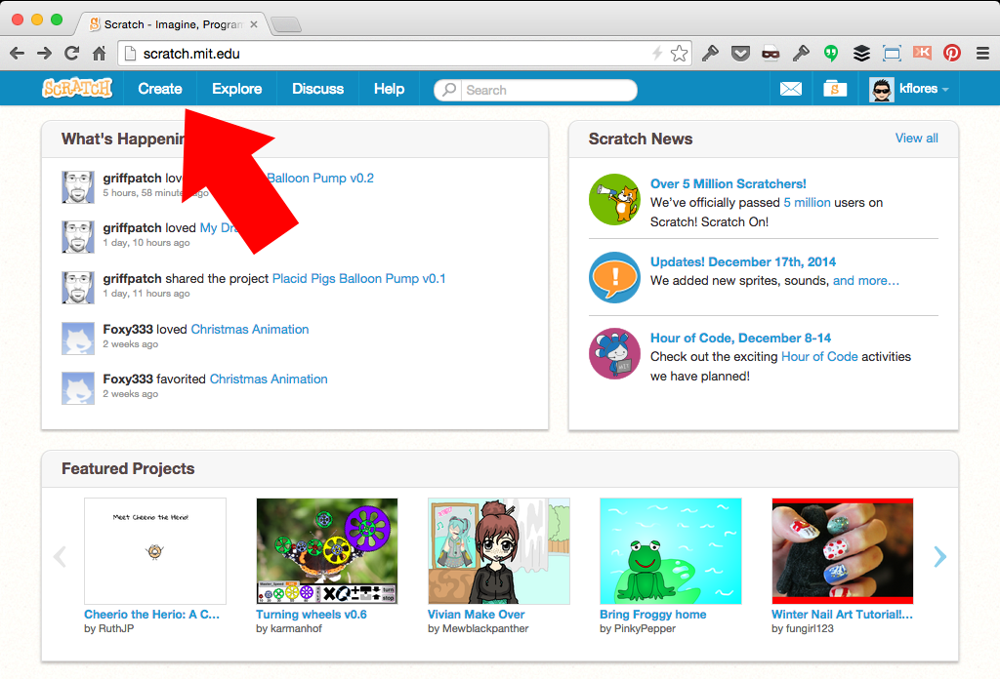Change the default Cat sprite
Select Sprite1's Costumes tab and click the "Choose Costumes from Library" icon.
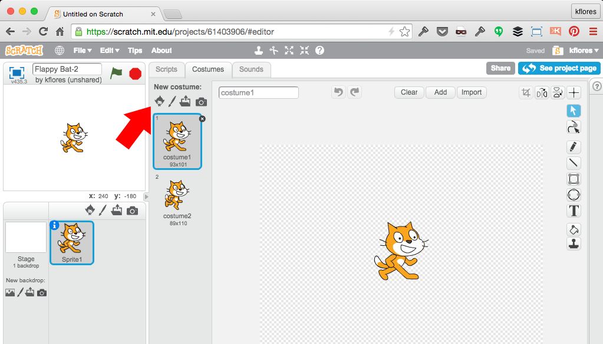Bat costumes from the Library
In the Costume Library, click on "Animals" and select "bat1-a"; click the "OK" button.
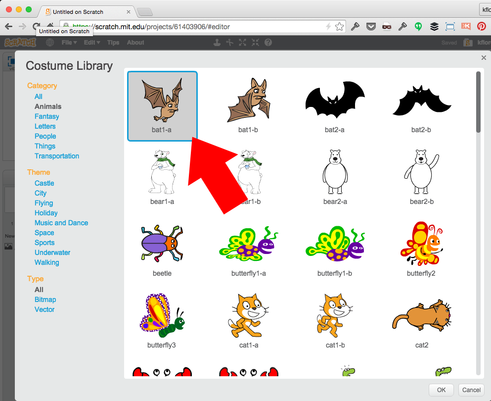Bat costumes from the Library
Repeat the last step to add the "bat1-b" costume; Delete the 2 Cat costumes and rename the sprite to "Bat".
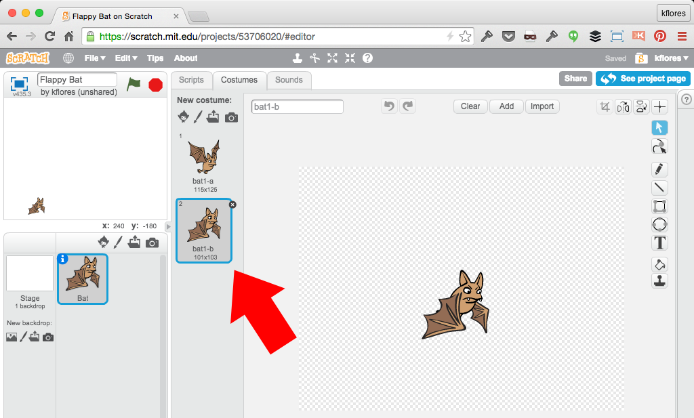Code to make your Bat "flap"
Set up your Bat sprite position and size; use a forever loop and key press to flap.
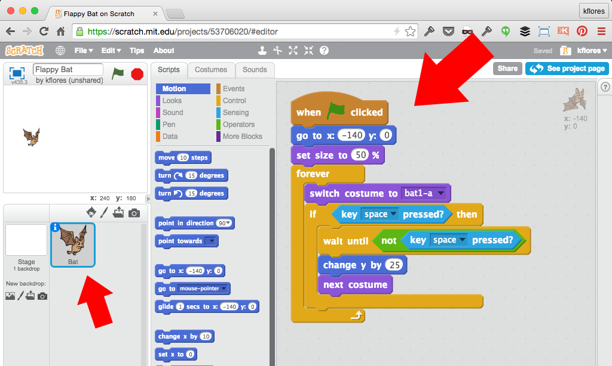Add Simple Gravity
Your Bat can't just fly up! Add a simple script to simulate gravity.
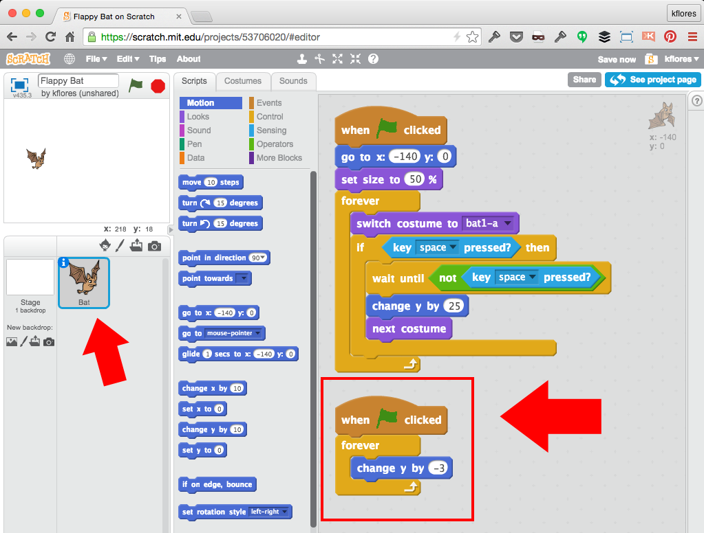Create a Barrier
Create a new sprite named Barrier. Draw simple shapes that your Bat will need to fly through.
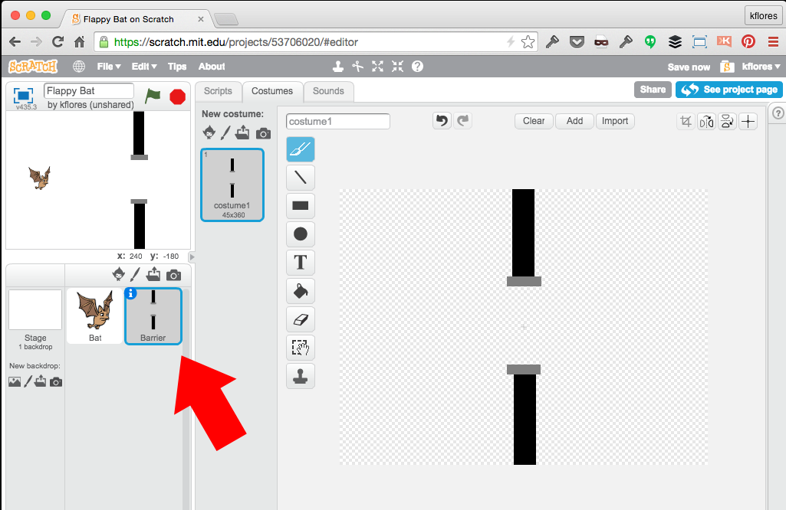Barrier set up script
Set up the Barrier sprite to repeatedly clone itself off-screen with slight random y-positions.
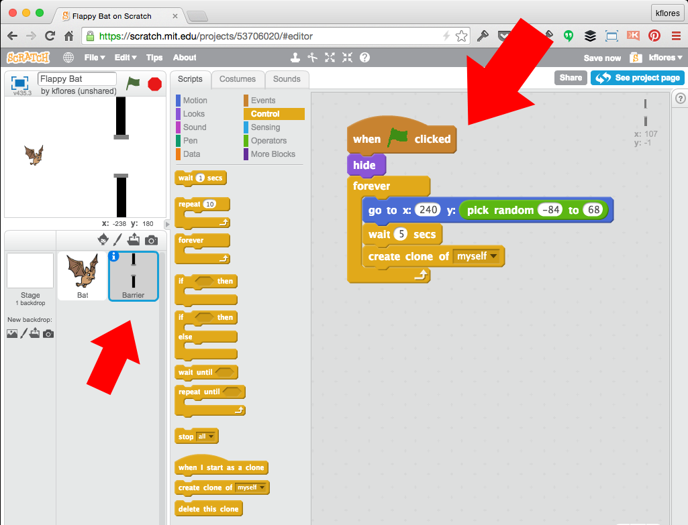Barrier Clone script
Each Barrier clone will move left across the screen before deleting itself.
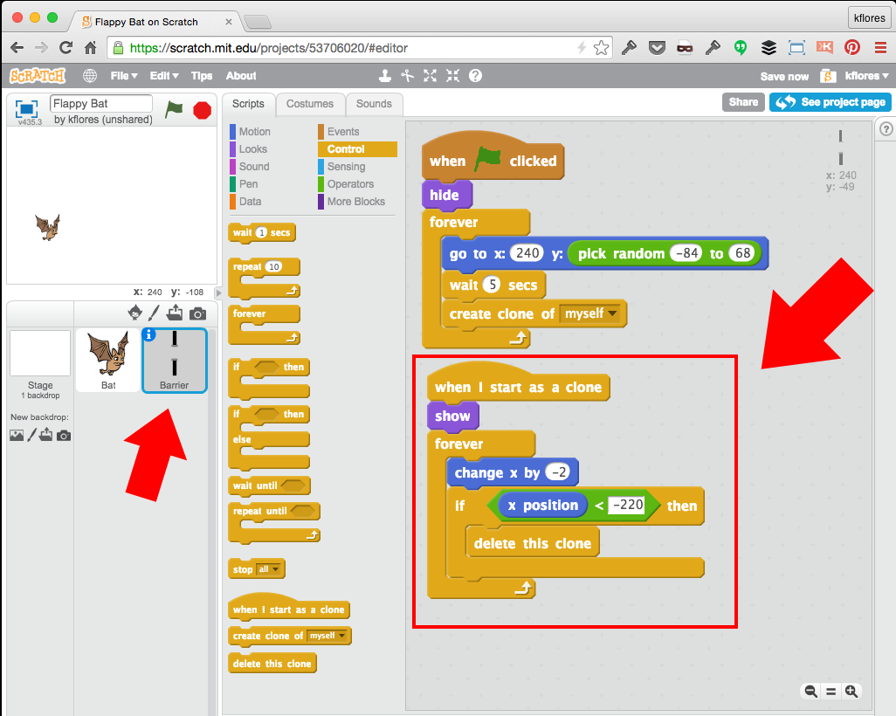Bat Collision script
Revise your main Bat script to detect collision with a Barrier.
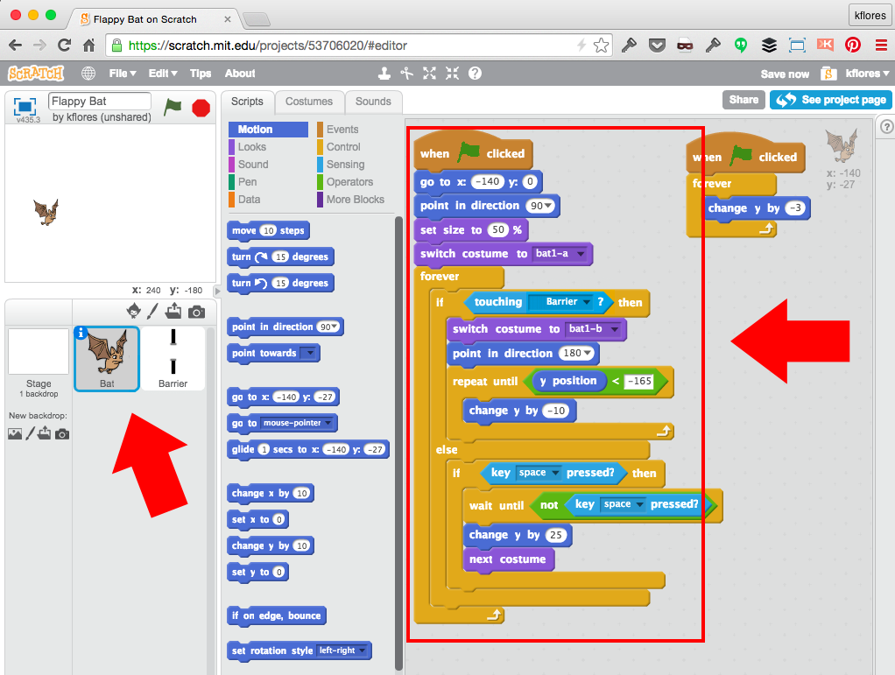Create a Score variable
Select the Barrier sprite and click "Make a Variable" in the Scripts/Data tab. Name it "Score".
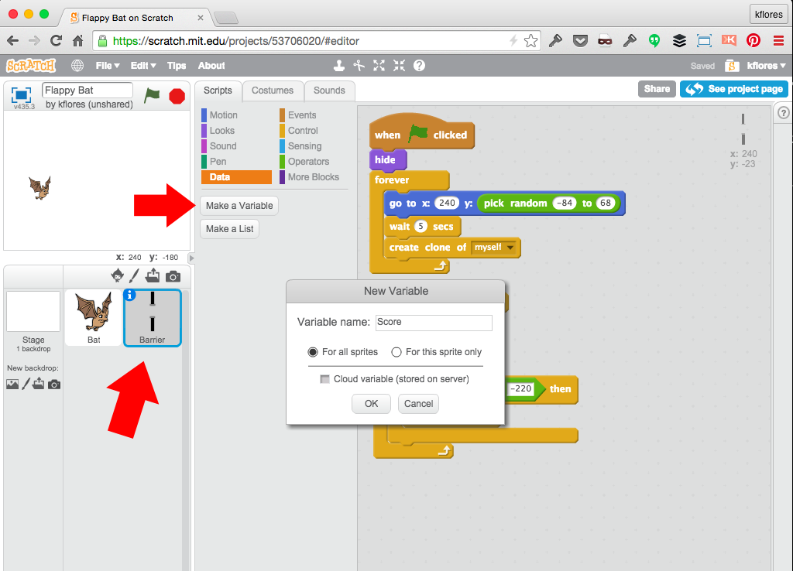Add a point for each Barrier passed
Set the Score to "0" upon start. Add an if-then statement to increment the Score variable when the Barrier clone passes a certain x-position (that matches the Bat sprite's x-position).
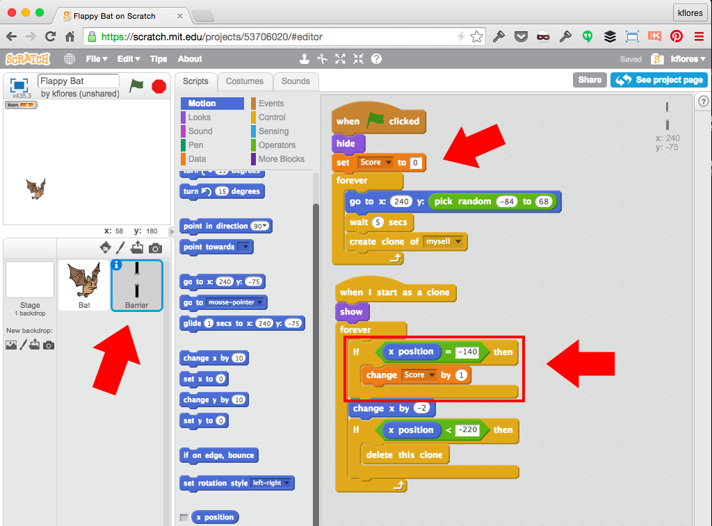Straighten out the Bat
Since our Bat 'fell' downward (direction of 180°); make it straight again after it falls (back to 90°).
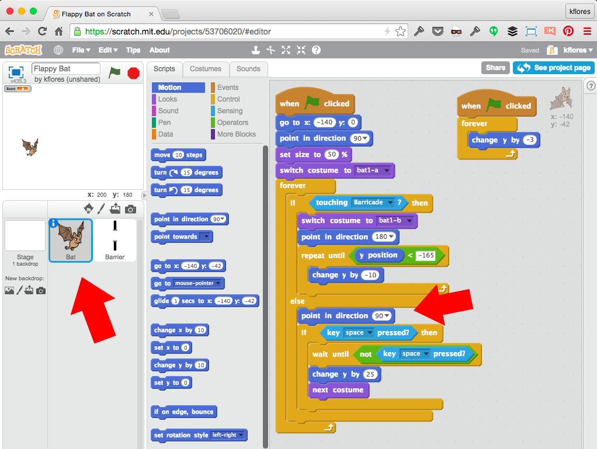Congratulations!
You built a Flappy Bat game! Now, here are a few Challenges:
-
Add sound effects for the Bat "flapping" and hitting Barriers.
-
Decide when the game is over by limiting how many times the Bat can hit a Barrier.
-
Create background scenery or even consider different types of sprites and scenes (ex. use the Octopus or Shark sprites in an underwater environment).
If you got stuck anywhere, see the completed project with comments here: http://scratch.mit.edu/projects/53706020/!
/